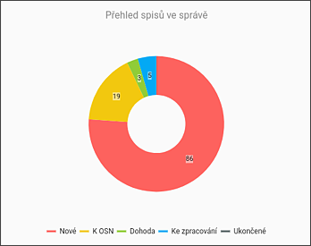
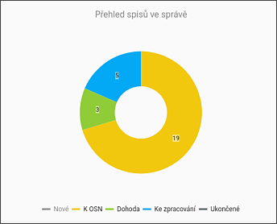

PŘEHLED SPISŮ VE SPRÁVĚ
Tento koláčový graf zobrazuje všechny spisy inspektora v různých stavech.

Kliknutím v poli vysvětlivky na jednotlivé stavy lze zobrazení těchto stavů vypnout či opět zapnout.
